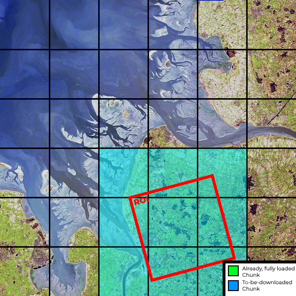

Auxiliary Data and Datacubes¶
DARTS uses several auxiliary data - data which does not change between different scenes and / or time steps. Raster auxiliary data is stored in Zarr Datacubes.
Currently, the following auxiliary data is used:
- ArcticDEM
- Tasseled Cap indices (Brightness, Greenness, Wetness)
with more to come.
ArcticDEM¶
The ArcticDEM is downloaded via their STAC server using these extend files.
The user can specify the download directory, where the ArcticDEM will be procedurally stored in a Zarr Datacube. The user can also specify the resolution of the ArcticDEM, which is either 2m, 10m or 32m. Each resolution is stored in their own Zarr Datacube.
darts_acquisition.load_arcticdem(geobox, data_dir, resolution, buffer=0, persist=True)
¶
Load the ArcticDEM for the given geobox, fetch new data from the STAC server if necessary.
Parameters:
| Name | Type | Description | Default |
|---|---|---|---|
geobox
|
GeoBox
|
The geobox for which the tile should be loaded. |
required |
data_dir
|
Path | str
|
The directory where the ArcticDEM data is stored. |
required |
resolution
|
Literal[2, 10, 32]
|
The resolution of the ArcticDEM data in m. |
required |
buffer
|
int
|
The buffer around the projected (epsg:3413) geobox in pixels. Defaults to 0. |
0
|
persist
|
bool
|
If the data should be persisted in memory. If not, this will return a Dask backed Dataset. Defaults to True. |
True
|
Returns:
| Type | Description |
|---|---|
Dataset
|
xr.Dataset: The ArcticDEM tile, with a buffer applied. Note: The buffer is applied in the arcticdem dataset's CRS, hence the orientation might be different. Final dataset is NOT matched to the reference CRS and resolution. |
Warning
Geobox must be in a meter based CRS.
Usage
Since the API of the load_arcticdem is based on GeoBox, one can load a specific ROI based on an existing Xarray DataArray:
import xarray as xr
import odc.geo.xr
from darts_aquisition import load_arcticdem
# Assume "optical" is an already loaded s2 based dataarray
arcticdem = load_arcticdem(
optical.odc.geobox,
"/path/to/arcticdem-parent-directory",
resolution=2,
buffer=ceil(self.tpi_outer_radius / 2 * sqrt(2))
)
# Now we can for example match the resolution and extent of the optical data:
arcticdem = arcticdem.odc.reproject(optical.odc.geobox, resampling="cubic")
The buffer parameter is used to extend the region of interest by a certain amount of pixels.
This comes handy when calculating e.g. the Topographic Position Index (TPI), which requires a buffer around the region of interest to remove edge effects.
Source code in darts-acquisition/src/darts_acquisition/arcticdem/datacube.py
252 253 254 255 256 257 258 259 260 261 262 263 264 265 266 267 268 269 270 271 272 273 274 275 276 277 278 279 280 281 282 283 284 285 286 287 288 289 290 291 292 293 294 295 296 297 298 299 300 301 302 303 304 305 306 307 308 309 310 311 312 313 314 315 316 317 318 319 320 321 322 323 324 325 326 327 328 329 330 331 332 333 334 335 336 337 338 339 340 341 342 343 344 345 346 347 348 349 350 351 352 353 354 355 356 357 358 359 360 361 362 363 364 365 | |
Tasseled Cap indices (TCVIS)¶
The TCVIS data is downloaded from Google Earth-Engine (GEE) using the TCVIS collection from Ingmar Nitze: "users/ingmarnitze/TCTrend_SR_2000-2019_TCVIS".
darts_acquisition.load_tcvis(geobox, data_dir, buffer=0, persist=True)
¶
Load the TCVIS for the given geobox, fetch new data from GEE if necessary.
Parameters:
| Name | Type | Description | Default |
|---|---|---|---|
geobox
|
GeoBox
|
The geobox to load the data for. |
required |
data_dir
|
Path | str
|
The directory to store the downloaded data for faster access for consecutive calls. |
required |
buffer
|
int
|
The buffer around the geobox in pixels. Defaults to 0. |
0
|
persist
|
bool
|
If the data should be persisted in memory. If not, this will return a Dask backed Dataset. Defaults to True. |
True
|
Returns:
| Type | Description |
|---|---|
Dataset
|
xr.Dataset: The TCVIS dataset. |
Usage
Since the API of the load_tcvis is based on GeoBox, one can load a specific ROI based on an existing Xarray DataArray:
import xarray as xr
import odc.geo.xr
from darts_aquisition import load_tcvis
# Assume "optical" is an already loaded s2 based dataarray
tcvis = load_tcvis(
optical.odc.geobox,
"/path/to/tcvis-parent-directory",
)
# Now we can for example match the resolution and extent of the optical data:
tcvis = tcvis.odc.reproject(optical.odc.geobox, resampling="cubic")
Source code in darts-acquisition/src/darts_acquisition/tcvis.py
163 164 165 166 167 168 169 170 171 172 173 174 175 176 177 178 179 180 181 182 183 184 185 186 187 188 189 190 191 192 193 194 195 196 197 198 199 200 201 202 203 204 205 206 207 208 209 210 211 212 213 214 215 216 217 218 219 220 221 222 223 224 225 226 227 228 229 230 231 232 233 234 235 236 237 238 239 240 241 242 243 244 | |
Why Zarr Datacubes?¶
Zarr is a file format for storing chunked, compressed, N-dimensional arrays. It is designed to store large arrays of data, and to facilitate fast and efficient IO. Zarr works well integrated with Dask and Xarray.
By storing the auxiliary data in Zarr Datacubes, it is much easier and faster to access the data of interest. If we would use GeoTiffs, we would have to first create a Cloud-Optimized GeoTiff (COG), which is basically an ensemble (mosaic) of multiple GeoTiffs. Then we would have to read from the COG, which behind the scenes would open multiple GeoTiffs and crops them to fit the region of interest. E.g. Opening a specific region of interest 10km x 10km from a 2m resolution COG would take up to 2 minutes, if the COGs extend is panarctic. Opening the same region from a Zarr Datacube takes less than 1 second.
Inspiration
This implementation and concept is heavily inspired by EarthMovers implementation of serverless datacube generation.
Procedural download¶
Info
The currently used auxiliary data is downloaded on demand, only data actually used is downloaded and stored on your local machine. Hence, the stored datacubes can be thought of as a cache, which is filled with data as needed.
There are currently two implementations of the procedural download used: a cloud based STAC download and a download via Google Earth-Engine.
Because the single tiles of the STAC mosaic can be overlapping and intersect with multiple Zarr chunks, the STAC download is slightly more complicated. Since Google Earth-Engine allows for exact geoboxes, download of the exact chunks is possible. This reduces the complexity of the download.
| STAC | GEE | |
|---|---|---|
| 1. ROI |  |
 |
| 2. ROI |  |
 |
The above graphics shows the difference between loading data from STAC (left) and Google Earth-Engine (right). With the STAC download, the data is downloaded from a mosaic of tiles, which can be overlapping with each other and cover multiple Zarr chunks. It may occur that a chunk is not fully covered by the STAC mosaic, which results in only partial loaded chunks. In such cases, the missing data in these chunks will be updated if the other intersecting tile is downloaded, which may occur to a later time if a connected ROI is requested. The download process is much easier for GEE, since one can request the exact geoboxes of the Zarr chunks and GEE will handle the rest. Hence, chunks will always be fully covered by the downloaded data.
Regarding the open ROI process, both implementations follow the same principle:
- Check which Tiles / Chunks intersect with the region of interest
- Dowload all new Tiles / Chunks
- Store the new Tiles / Chunks in their specific Zarr chunks
- Return the region of interest of the Zarr Datacube